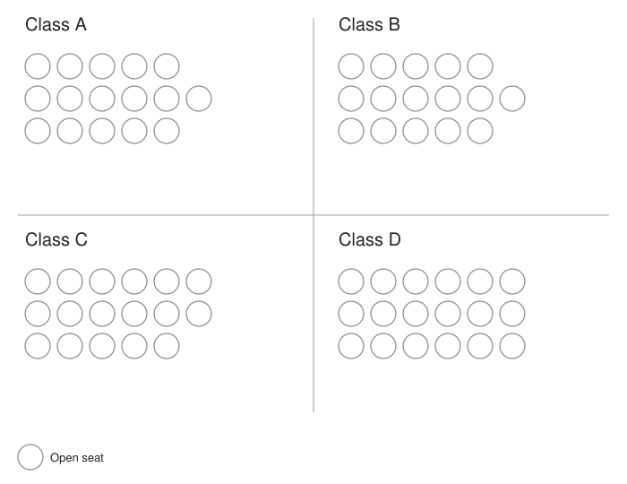
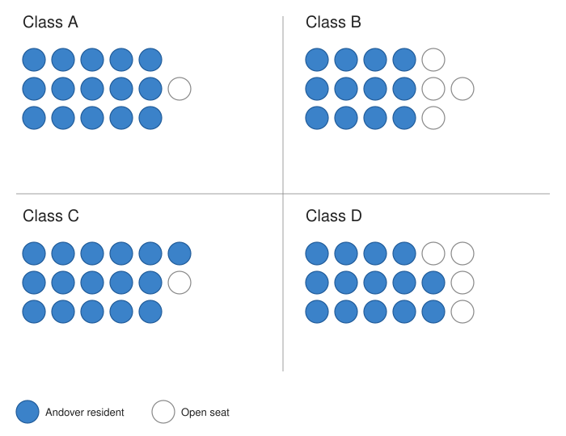
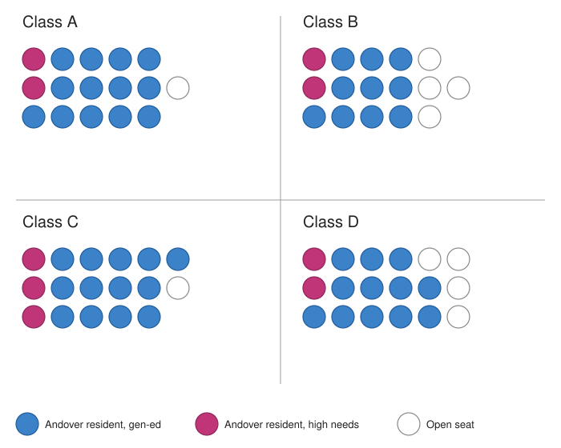
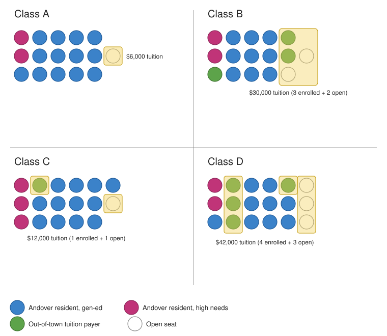
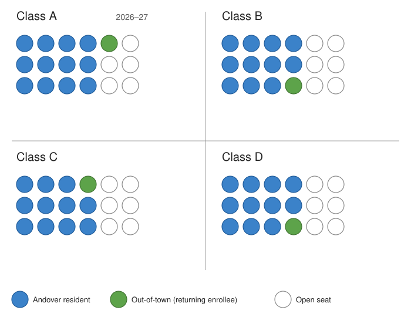

Town of Andover, CT · Visualizing AES Pre-K enrollment from Dr. Bruneau's May 7, 2026 video
A personal report by Scott Sauyet · scott@sauyet.com · Not an official town document
Report compiled May 10, 2026, in response to discussion at the May 6, 2026 Andover Board of Finance meeting about whether the Andover Elementary School preschool could be operated with two or three classrooms instead of four. The report transcribes and recreates the diagrams Superintendent Dr. Valerie Bruneau presented in her May 7, 2026 video response, then offers analytical observations that connect the diagrams to the financial analysis published in the companion preschool funding report. The diagram counts and the dollar figures throughout this report are drawn directly from the video; the analytical commentary and the connections to the broader financial picture are this author’s own.
Introduction
At the Andover Board of Finance meeting on May 6, 2026, a member suggested that the Andover Elementary School preschool could be reduced from four classrooms to two or three as a cost-saving measure. The following day, Superintendent Dr. Valerie Bruneau posted a video response (published to YouTube as youtube.com/watch?v=S39PhmDqDqg) walking through the school’s current enrollment using a sequence of simple diagrams. The diagrams show, room by room, where students currently sit and how each seat is funded — and they show, concretely, that a reduction to two or three classrooms is not feasible with the program’s current enrollment.
This report does three things:
The video also corrects a misstatement Dr. Bruneau made at the May 6 meeting (the minimum bus-eligibility age in Andover is 4, not 5), addresses a question about how lunches and snacks are funded in the preschool, and confirms the final Board of Finance budget result for the year. Those items are summarized in the final section.
Background
Before showing the diagrams, Dr. Bruneau spent the opening of her video explaining what teachers and principals do every spring when they assign students to next year’s classrooms. The explanation is worth recapping because it’s the framework her diagrams sit inside.
In any K–6 school district that has more than one classroom per grade, “creating classes” — deciding which students go in which room for the next school year — is a deliberate spring process led by the principal and special education director, in consultation with classroom teachers. The factors weighed include:
This is the framework that applies in every classroom and every grade. It applies to the AES preschool too. The diagrams Dr. Bruneau presented show how the preschool program’s current four classrooms have been structured under these constraints — and why consolidating them into fewer rooms is not a matter of preference but of legal compliance and educational practice.
Diagrams
The five diagrams below are recreations of the whiteboards Dr. Bruneau presented in her May 7, 2026 video, with cleaner typography and explicit legends. Each diagram shows the four AES preschool classrooms as a 2×2 grid; each room contains a grid of circles representing seats. Color encoding is consistent across all five diagrams:
Each diagram below corresponds to a specific moment in the video; timestamps link to the relevant point.
The starting point: four rooms (A, B, C, D), each with a grid of seats. The seat counts vary from room to room — Class A has 16 seats, Classes B and C have 17 each, and Class D has 18. The variation reflects the physical capacity of each classroom space and the staffing ratio appropriate for that group.

Now Dr. Bruneau fills in the Andover-resident enrollment in blue. This single diagram answers the structural question directly: there are 57 Andover residents currently enrolled in the program, distributed across four classrooms. Three classrooms with the program’s typical 15-to-18-seat capacity could not contain them.

Per-room breakdown:
| Class | Andover residents | Open seats | Room capacity |
|---|---|---|---|
| A | 15 | 1 | 16 |
| B | 12 | 5 | 17 |
| C | 16 | 1 | 17 |
| D | 14 | 4 | 18 |
| Total | 57 | 11 | 68 |
Notes: Counts derived directly from the diagram Dr. Bruneau presented at the 4:20 mark of her May 7, 2026 video. The 57 Andover-resident figure is the single most important number in the structural argument: even consolidating into three rooms at 18 students per room (the upper end of the program’s capacity) yields 54 seats — three short of current Andover demand alone.
The companion financial report observed in Part 5 that “the exact count of out-of-town students enrolled in the program” was a figure not currently published. The video’s diagrams now make this and several related counts publicly available, at least for this fiscal year.
Dr. Bruneau next adds pink dots to mark the students with identified special needs — those with IEPs, 504 plans, current Birth-to-Three referrals, or consult-status referrals in process. There are nine such students currently enrolled, distributed across all four rooms.

Per-room breakdown:
| Class | High needs (pink) | Other Andover (blue) | Open | Total |
|---|---|---|---|---|
| A | 2 | 13 | 1 | 16 |
| B | 2 | 10 | 5 | 17 |
| C | 3 | 13 | 1 | 17 |
| D | 2 | 12 | 4 | 18 |
| Total | 9 | 48 | 11 | 68 |
Notes: AES does not enroll out-of-town special-education students. Special-education services for non-resident children are the responsibility of the child’s town of residence, not the host town. So all nine high-needs students shown here are Andover residents.
The distribution is the legally required pattern — every room has at least two high-needs students. As Dr. Bruneau noted in the video, “You don’t put them in one room. That is not educationally sound for students. It’s not legal either.” This is the federal Least Restrictive Environment requirement (34 CFR §§300.114–300.120) operating in practice, and it is one structural reason the program must run as four smaller classrooms rather than two or three larger ones.
Dr. Bruneau next adds green dots for the out-of-town students currently enrolled — students who pay $6,000 per year in tuition and whose enrollment fills seats that would otherwise sit empty. Yellow rectangles mark, room by room, the seats that are already producing tuition revenue and the seats that could still be filled by additional out-of-town students at $6,000 each.

Per-room breakdown:
| Class | Pink | Blue | Green | Empty | Current tuition revenue | Potential if open seats fill |
|---|---|---|---|---|---|---|
| A | 2 | 13 | 0 | 1 | $0 | $6,000 |
| B | 2 | 10 | 3 | 2 | $18,000 | $30,000 |
| C | 3 | 13 | 1 | 1 | $6,000 | $12,000 |
| D | 2 | 11 | 4 | 3 | $24,000 | $42,000 |
| Total | 9 | 47 | 8 | 7 | $48,000 | $90,000 |
Notes: Of the eight out-of-town students currently enrolled, two are children of AES staff members (per Dr. Bruneau’s narration at 6:46 — both are located in Class D). Staff children pay full tuition; the AEA and CSEA contracts do not contain a tuition-reduction provision for staff. The $6,000 figure is the published out-of-town tuition rate from the 2025–26 Preschool Registration Packet.
This diagram concretely illustrates a financial point made structurally in Part 5 of the financial report: out-of-town enrollment is incremental revenue that helps fund the program. The eight out-of-town students currently enrolled contribute approximately $48,000 in tuition revenue. If the seven remaining open seats in those rooms were also filled with out-of-town students, the program would receive an additional $42,000 — bringing total out-of-town tuition revenue to roughly $90,000 per year.
That figure — approximately $90,000 in potential out-of-town tuition revenue — is roughly the same magnitude as the program’s net town subsidy on a fully-loaded operating basis (estimated in Part 3 of the financial report at approximately $92,000 per year, with a range of $84,000–103,000). Filling the open seats with out-of-town tuition payers, where doing so is consistent with the program’s needs assessment, would substantially close the operating funding gap.
The final diagram is forward-looking. As of early May 2026, 46 Andover residents have completed enrollment paperwork for the 2026–27 school year. Four out-of-town families already enrolled this year have been invited back. Each room is shown as a uniform 18-seat (3×6) grid — Dr. Bruneau notes that “ideally we always start at the 15 seats in a room until we know the needs of the students,” with capacity expanding to 18 if appropriate after needs assessment.

Per-room breakdown:
| Class | Andover residents | Out-of-town returning | Open | Total |
|---|---|---|---|---|
| A | 12 | 1 | 5 | 18 |
| B | 12 | 1 | 5 | 18 |
| C | 11 | 1 | 6 | 18 |
| D | 11 | 1 | 6 | 18 |
| Total | 46 | 4 | 22 | 72 |
Notes: Pink/high-needs designations are not separately marked in this diagram because some of the special-education needs for incoming three-year- olds will not be confirmed until summer Birth-to-Three transfers and IEP meetings. Dr. Bruneau notes that the town’s vital statistics show roughly 9–11 additional Andover births from three years ago (the relevant cohort) whose families have not yet enrolled. Some will move in over the summer or register late; some may have moved out of town.
Twenty-two open seats remain. Several scenarios are possible:
Filling all 22 currently-open seats with out-of-town tuition payers is the upper-bound scenario; doing so would generate $132,000 in additional tuition revenue. The realistic figure is lower because some seats will go to incoming Andover births and some to high-needs Birth-to-Three transfers — but the direction is clear: the program has substantial unfilled capacity, all of which is on offer for revenue contribution rather than cost.
Connections
The diagrams above answer one question: can the program be run with fewer classrooms? The answer is no, both because of the raw resident headcount (57 Andover residents this year, projected 46+ next year before unaccounted births enroll) and because of the legal requirement to distribute high-needs students across rooms. Two or three rooms would either turn away Andover residents or violate the federal Least Restrictive Environment requirement — and likely both.
A separate question is what the program costs the town. That question was the subject of the May 2, 2026 financial report and is summarized in this report’s Summary table. The short version: the program is approximately revenue-neutral on the school’s own operating ledger and runs a small net town subsidy of approximately $92,000 per year (range $84,000–103,000) on a fully-loaded basis that includes employee benefits — and once the avoided special-education compliance cost is accounted for (estimated at approximately $200,000 per year, range $170,000–230,000), the program likely produces a net savings to the town of approximately $108,000 per year.
The diagrams add three pieces of new information to that financial picture:
The $90,000 of out-of-town tuition potential is a real lever. The current program collects approximately $48,000 in out-of-town tuition this year. The diagrams show that the four-classroom structure has capacity for approximately $90,000 of out-of-town tuition revenue per year if open seats are filled with out-of-town tuition payers. That additional approximately $42,000 of potential revenue — relative to the program’s $84,000–103,000 net town subsidy — is roughly half the gap. To the extent that filling open seats is consistent with the program’s needs assessment for each classroom, doing so directly reduces the net town cost of the program.
The 9 high-needs students are not hypothetical. The financial report’s Part 4 estimated the avoided special-education compliance cost at $170,000 to $230,000 per year, based on national IDEA Section 619 identification rates of 6–7% applied to Andover’s 75–90 student preschool-age cohort. The diagram in this report shows nine specifically identified high-needs students currently enrolled — at the high end of the 5–8 range Part 4 used as the working estimate. If anything, the financial report’s avoided-cost estimate is conservative.
Out-of-town enrollment is structurally bounded by Andover demand. With 57 Andover residents currently enrolled and only 8 out-of-town students, the question of whether out-of-town enrollment “displaces” Andover residents is answered by the diagram itself: it doesn’t, because Andover residents fill 84% of the program’s seats and the remaining seats are either empty or filled by tuition-paying non-residents. The published five-step priority order (detailed in Part 5 of the financial report) ensures this in policy; the diagram makes it visible in practice.
Other items
Dr. Bruneau used the same video to address two ancillary points raised at the May 6 Board of Finance meeting and to confirm the meeting’s final budget outcome. They are summarized here for completeness.
At the Board of Finance meeting Dr. Bruneau stated that the minimum age for bus eligibility in Andover is 5. In the video she corrects this: in Andover the minimum is 4. (Eligibility ages vary by town across Connecticut.)
A Board of Finance member asked at the May 6 meeting how lunches and snacks are handled in the preschool. Dr. Bruneau’s video clarifies:
The video shows specific Coventry Food Service invoices for September and October 2025 by way of confirmation. There is no separate “lunch budget” for the preschool that draws on town general funds.
The May 6 Board of Finance meeting concluded with the following budget adjustments, which Dr. Bruneau summarized at the end of her video:
| Item | Amount |
|---|---|
| Reduction on the town side | −$16,400 |
| Governor’s education aid (offsetting the school’s ask) | ~$100,000 |
| Capital account allocation diverted to current-year operations | −$50,000 |
| Direct cut to school operating account | −$50,000 |
| Net effect on what voters will see at the next referendum | ~−$200,000 reduction |
Dr. Bruneau noted that the $50,000 operating cut will be reconciled with the Board of Education at a future meeting once the budget passes; if the cut cannot be absorbed within current expenditures, it would be moved to the 2% non-lapsing account, as was done with the previous year’s $160,000 cut.
At a glance
| Question | Answer | Source |
|---|---|---|
| Can the AES preschool be run with two or three classrooms instead of four? | No. 57 Andover residents are currently enrolled — too many to fit even three rooms at the program’s 18-seat upper capacity (54 seats). Federal LRE law also requires distributing the 9 identified high-needs students across rooms, not concentrating them. | Video diagrams 4:20 and 4:40 |
| How many students are in the program right now, broken down by category? | 57 Andover residents (9 high-needs, 48 general-ed) plus 8 out-of-town tuition payers (2 of whom are children of AES staff). 7 open seats remaining. Total enrollment 65 of 68 seats. | Video diagram 7:22 |
| How much tuition revenue does the program currently collect from out-of-town families? | Approximately $48,000 per year (8 students × $6,000). | Diagram + published $6,000 tuition rate |
| How much additional tuition could be collected if remaining open seats were filled? | Approximately $42,000 per year (7 open seats × $6,000), bringing total out-of-town tuition to roughly $90,000. | Diagram + published $6,000 tuition rate |
| What is the relationship between this $42,000 of potential additional revenue and the program’s net town cost? | The program’s fully-loaded net town subsidy is estimated at approximately $92,000 per year (range $84,000–103,000); the additional $42,000 in potential out-of-town tuition would close roughly half that gap. | Combined with Part 3 of financial report |
| How many Andover residents are projected to enroll for 2026–27? | 46 confirmed as of early May 2026, with an estimated 9–11 additional unaccounted births from three years ago that may or may not enroll. Likely 2026–27 Andover enrollment: 50–57. | Video diagram 9:31 |
| What is the minimum bus-eligibility age in Andover? | 4 years old. (Dr. Bruneau’s previous statement of “5” was a misstatement, corrected in this video.) | Video 0:26 |
| Are lunches paid from town general funds? | No. Children bring their own lunches; reduced-price meals are federally reimbursed; the program’s incidental food supplies (snacks, napkins, utensils) come from the preschool’s supply line within program revenue. | Video 10:41 |
Analysis
The structural argument for four classrooms is conclusive on its own terms. Fifty-seven Andover residents are currently enrolled. Three rooms at 18 seats each — the upper bound of the program’s per-room capacity — total 54 seats. Even before considering the legal requirement to distribute high-needs students across rooms, three classrooms cannot contain current Andover demand. The argument that the program could be reduced to two or three classrooms is not consistent with the published enrollment numbers.
The Least Restrictive Environment requirement is doing real work in this classroom assignment. The diagrams show pink dots (high-needs students) distributed across all four rooms in a 2-2-3-2 pattern. This is not a discretionary choice that could be rearranged for budget reasons; it is a specific federal law (34 CFR §§300.114–300.120) that requires students with disabilities to be educated alongside typically-developing peers to the maximum extent appropriate. Concentrating these nine students into one or two rooms would not save money — it would create a more restrictive, more expensive setting that fails the LRE test and exposes the district to compliance challenge.
The current four-classroom structure is approximately right-sized for the program’s revenue model. The program currently fills 65 of 68 seats — a 96% utilization rate. Eight out-of-town students contribute approximately $48,000 in tuition revenue; seven open seats represent another roughly $42,000 of potential. This pattern — high resident demand, modest out-of-town participation that fills incremental seats with incremental revenue, and small remaining capacity — is what a financially well-tuned community preschool looks like.
The diagrams answer questions Part 5 of the financial report flagged as unavailable. That report observed that “the exact count of out-of-town students enrolled in the program,” “the split between full-tuition and sliding-scale out-of-town students,” and “whether any of the out-of-town students are children of Andover Public Schools employees” were figures not currently published. The video diagrams confirm: 8 out-of-town students total and 2 of them are staff children. The split between full-tuition and sliding-scale out-of-town students is not separately shown in the diagrams, but the residency restrictions on Smart Start (Andover residents only) plus the 8-student total bound the answer.
The 9 high-needs figure validates the financial report’s avoided-cost estimate. Part 4 of the financial report estimated the avoided special-education compliance cost at approximately $200,000 per year, based on a working assumption of 5–8 high-needs preschoolers per year. The diagrams show 9 — at or slightly above that range. The financial report’s avoided-cost estimate is, if anything, slightly conservative.
Filling open seats with out-of-town tuition payers is fully consistent with Andover-first enrollment policy. The 7 currently-empty seats are not in demand from Andover residents; if they were, they would already be filled under the published five-step priority order (residents first at every income-eligibility level). Filling these seats with out-of-town tuition payers — at $6,000 each, contributing approximately $42,000 in additional revenue — does not displace any Andover student. It converts unused capacity into program revenue.
The program continues to perform as a working example of the Connecticut preschool-funding model in a small town. Andover residents fill 84% of the program’s enrolled seats. State Smart Start and Early Start grants pay for half the certified teachers and one quarter of the paraeducators. Tuition from full-pay families and from sliding-scale income-eligible families together cover the remaining staff. Out-of-town tuition fills incremental seats with incremental revenue. The program absorbs special-education mandate cost that would otherwise fall as direct expenditure on the town. None of these elements requires extraordinary effort to maintain; what is required is that they not be undone in pursuit of an apparent saving that does not actually exist.
Caveats
A few caveats worth being explicit about:
This report does not establish what the appropriate number of preschool classrooms would be at different levels of Andover demand. The current analysis is specific to the 2025–26 enrollment of 57 Andover residents and the 2026–27 projected enrollment of 46+. If Andover demand were to fall substantially in future years — for example, if the cohort sizes implied by recent town birth records were to drop below 30 per year for a sustained period — the four-classroom structure would warrant re-examination. That analysis would require enrollment projections out beyond a single year and is not in the scope of this report.
This report does not address the educational case for or against the preschool program itself, or the question of whether the current program design (8 staff serving up to 72 students, four classrooms, blended income eligibility) is the best available program design for Andover. Those are important questions that this report does not answer; the structural argument here is conditional on the program existing in roughly its current form.
The recreation of the diagrams is faithful to the video but is not a verbatim screenshot. Cell counts and color assignments were taken from the video at the timestamps cited, but minor differences in the recreated layout versus the original whiteboard sketches (for example, the exact column in which a particular green dot is placed within a row) should be treated as illustrative rather than authoritative. The summary counts per room — 15/12/16/14 Andover residents, 9 total high-needs, 8 out-of-town, 7 empty — match the video.
The 2026–27 projection is exactly that — a projection. The 9–11 unaccounted Andover births from three years ago may or may not enroll; some will move in during the summer; some may opt to delay entry by a year; some may move out of town. Birth-to-Three referrals received over the summer will fill some open seats with high-needs incoming students. The realistic 2026–27 enrollment will land somewhere in the middle of the scenarios sketched in Part 2, not at either extreme.
The dollar figures attached to potential additional out-of-town tuition ($42,000 per year, $90,000 total potential) assume the published $6,000 out-of-town tuition rate continues to apply. That rate is set by the BOE and could change. Tuition increases would raise the figures proportionally; tuition decreases would lower them.
This report does not capture every detail in Dr. Bruneau’s video. Topics omitted from this report include: the longer discussion of the rationale for the class-creation process generally; her broader concern about misinformation in town discussions; and her closing remarks about what budget decisions remain ahead. Readers wanting the full picture should watch the video directly at the YouTube link above.
Documentation
Primary source for all diagram counts and dollar figures in this report:
Primary financial source for the connections to the broader cost picture:
Underlying public sources cross-referenced in the analysis:
Download
This report is available in three formats, all located alongside this page: